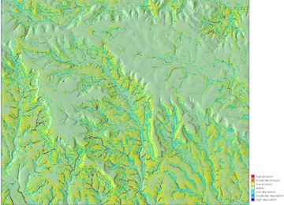
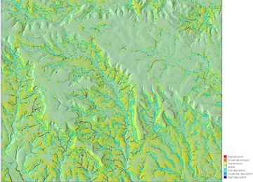

Soil erosion and deposition modeling
GRASS GIS workflow
Helena Mitasova, Anna Petrasova, Vaclav Petras, ...
See also ArcGIS workflow.
Resources: GRASS GIS manual, GRASS GIS 7 Introduction (presentation), Introduction to GRASS GIS (workshop)
start GRASS
grass70
In the startup pannel select your project
GIS data directory: type path to GRASS datasets
LOCATION: select fthood_utm14
MAPSET: select erosion
Enter GRASS
List and display input data: add the layers to layer manager or type:
g.list rast,vect d.rast ndvi d.rast soils_kfac d.rast elevation d.vect boundary d.vect streams d.vect area1_10m
{kind=link}
{kind=link}
{kind=link}
Set computational region to area1_10m and zoom into it
g.region area1_10m -p projection: 1 (UTM) zone: 14 datum: wgs84 ellipsoid: wgs84 north: 3466740 south: 3454870 west: 611720 east: 626090 nsres: 10 ewres: 10 rows: 1187 cols: 1437 cells: 1705719
To view the test area in 3D switch off all layers except elevation, and switch to 3D view, or run the 3D visualization from command line
g.gui.wxnviz elevation co=ndvi
{kind=link}
{kind=link}
{kind=link}
Compute input parameters slope, aspect and flowaccumulation.
You can use r.flow or r.watershed to compute flowaccumulation, we use r.flow here,
which is specially designed for generating input for hillslope erosion modeling
r.slope.aspect elevation slo=slope asp=aspect r.flow elevation flowacc=flowacc
{kind=link}
{kind=link}
{kind=link}
Compute topographic component (factor) of sediment transport capacity LST For the exponents use m=n=1, resolution is 10. or use m=1.3 and n=1.2 for study areas with extensive rills, in this case, channels/streams will have large erosion rates due to high values of flowaccumulation
r.mapcalc "sflowtopo = flowacc * 10. * sin(slope)" r.colors sflowtopo rules=sedflow_colors.txt r.mapcalc "sflowtopo_rill = sflowtopo_rill = pow(flowacc * 10.,1.3) * pow(sin(slope),1.2)" r.colors sflowtopo_rill rules=sedflow_colors.txt
Compute sediment flow by combining the rainfall, soil and land cover factors with the topographic sediment transport factor. We use a constant value of 270. for rainfall intensity factor
r.mapcalc "sedflow = 270. * soils_kfac * cover_cfac * sflowtopo" r.colors sedflow rules=sedflow_colors.txt
The images show "sflowtopo", "cover_cfac", and "sedflow"
{kind=link}
{kind=link}
{kind=link}
Compute components of sediment flow in x and y direction
r.mapcalc "sedflow_x = sedflow * cos(aspect)" r.mapcalc "sedflow_y = sedflow * sin(aspect)"Compute components of change in sediment flow in x and y direction as partial derivatives of sediment flow field,
r.slope.aspect sedflow_x dx=sedflow_dx r.slope.aspect sedflow_y dy=sedflow_dy
Compute net erosion deposition and assign an appropriate color scheme to the erosion_deposition raster
r.mapcalc "erosion_deposition = sedflow_dx + sedflow_dy" r.info -r erosion_deposition r.colors erosion_deposition rules=erdep_colors.txt d.rast erosion_deposition d.legend erosion_deposition at=2,50,2,6 range=-20,20 g.gui.wxnviz elevation co=erosion_deposition
 

{kind=link}
Classify the erosion and deposition layer into pre-defined classes
r.recode erosion_deposition out=erdep_class rules=erdep_classes.txt r.category erdep_class rules=erdep_labels.txt sep=: r.report erdep_class unit=p,h,aexample output [...]
|MAP: Erosion and deposition classes |-----------------------------------------------------------------------------| |#|description |%cover| hectares| acres| |-----------------------------------------------------------------------------| |1|high erosion >10.0 . . . . . . . . . . . . . .| 0.59| 101.230| 250.145| |2|moderate erosion 5.0-10.0. . . . . . . . . . .| 0.59| 100.630| 248.662| |3|low erosion 0.1-5.0. . . . . . . . . . . . . .| 27.26| 4650.210|11,490.919| |4|stable <0.1. . . . . . . . . . . . . . . . . .| 54.11| 9230.490|22,809.038| |5|low deposition 0.1-5.0 . . . . . . . . . . . .| 15.67| 2672.780| 6604.583| |6|moderate deposition 5.0-10.0 . . . . . . . . .| 0.62| 105.410| 260.474| |7|high deposition >10.0. . . . . . . . . . . . .| 0.69| 117.810| 291.115| |*|no data. . . . . . . . . . . . . . . . . . . .| 0.46| 78.630| 194.299| |-----------------------------------------------------------------------------| |TOTAL |100.00|17,057.190|42,149.234| +-----------------------------------------------------------------------------+© 2014 NCSU OSGeoREL, license CC BY-SA